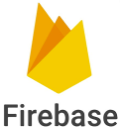
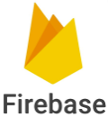

Why Web Developer?
The decision to become a web developer was an unexpected turn in my life, prompted by a back injury.
After careful consideration, I found myself still determined to make this life-changing shift and reconsider my career once again. It was at this crucial point that I recognized the need to explore new professional horizons.
Based on my creativity, I decided to elevate it to a professional level by creating web pages.
Throughout this experience, I not only picked up the details of web development but also grasped the fundamental principles behind it. Now, with clear ideas about my position and goals in this field, I am eagerly anticipating the opportunity to take my career to a professional level, whether working independently or as part of a team.


 
